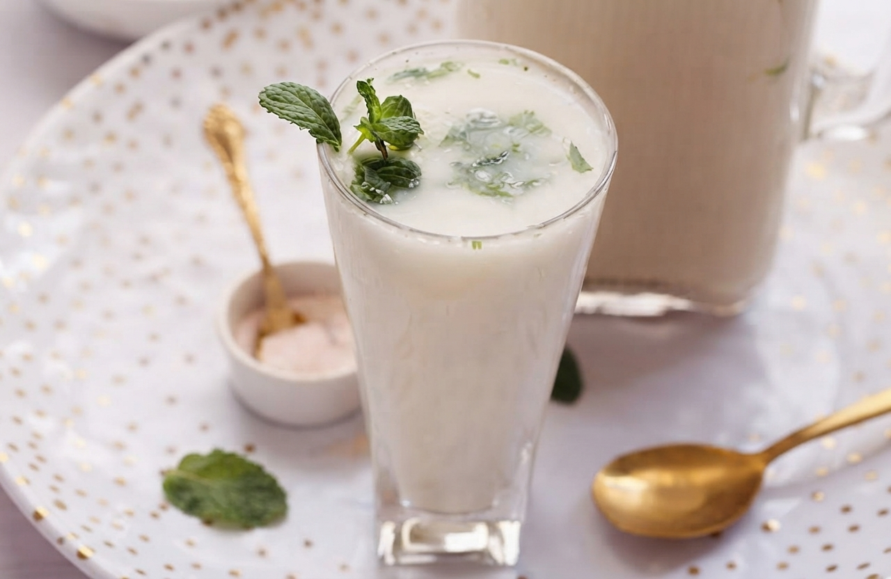
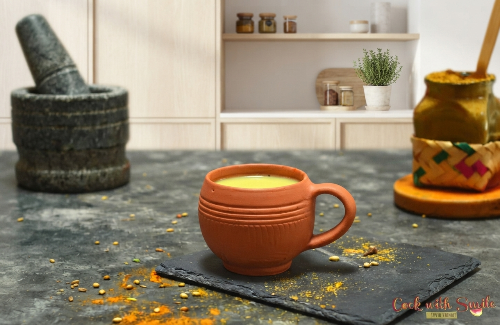
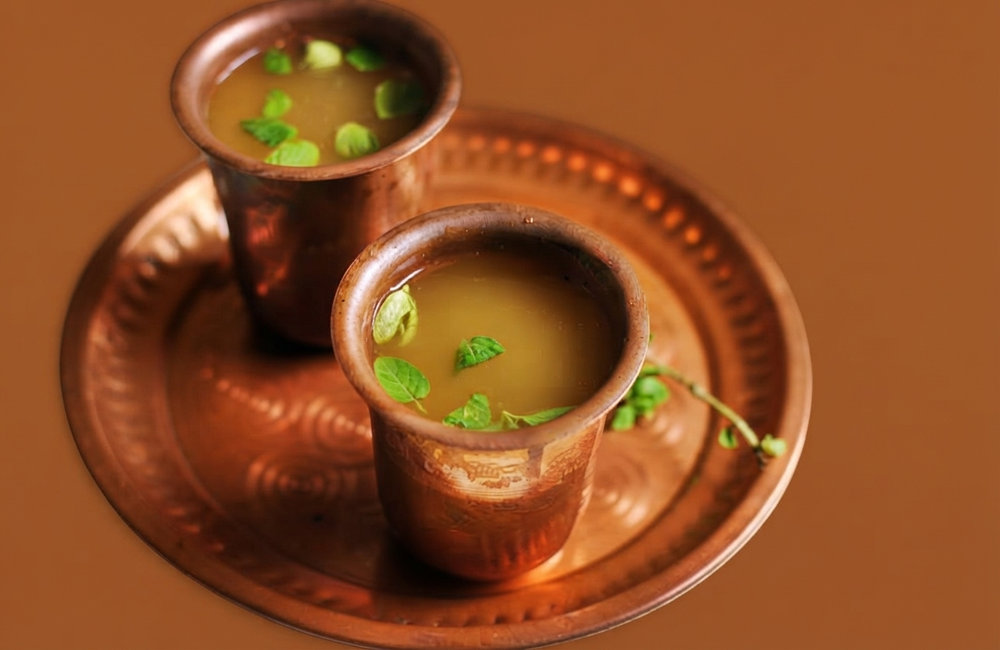

Majjige
Majjige is a light, cooling Karnataka spiced buttermilk flavored with fresh ginger, green chillies, and curry leaves—perfect for warm days or after meals.
Ingredients
- 2 cups thick yogurt (curd)
- 4 cups cold water
- 1 inch ginger, crushed
- 2 green chillies, slit
- 10-12 curry leaves
- ½ tsp mustard seeds
- Pinch of asafoetida
- Salt to taste
- 1 tsp oil (for tempering)
Instructions
- Whisk yogurt with cold water until smooth and frothy.
- Add crushed ginger, green chillies, curry leaves, and salt. Mix well.
- Heat oil in a small pan. Add mustard seeds and let them splutter.
- Add asafoetida and remaining curry leaves. Fry for 10 seconds.
- Pour tempering over the buttermilk mixture. Stir gently.
- Serve immediately chilled. Garnish with fresh coriander if desired.

Ragi Ambli
Ragi Ambli is a traditional, cooling Karnataka drink made from nutrient-rich finger millet (ragi), loved as a light and refreshing rural staple for warm days.
Ingredients
- ½ cup ragi flour (finger millet)
- 3 cups water
- 1 small onion, finely chopped
- 2 green chillies, chopped
- 2 tbsp chopped coriander
- 1 tsp cumin powder
- ½ tsp chaat masala
- Salt to taste
- Lemon juice (optional)
Instructions
- Mix ragi flour with 1 cup cold water to make a smooth slurry (no lumps).
- Boil remaining 2 cups water. Pour slurry into boiling water while stirring continuously.
- Cook on low heat for 5-7 minutes until it thickens slightly. Let it cool completely.
- Add chopped onion, green chillies, coriander, cumin powder, chaat masala, and salt.
- Add enough cold water to reach desired consistency. Mix well.
- Add lemon juice if desired. Serve chilled.

Filter Coffee
Filter Coffee is an iconic South Indian staple brewed slowly through a metal filter and mixed with hot milk and sugar, traditionally served in a classic steel tumbler and davara.
Ingredients
- 3 tbsp South Indian filter coffee powder
- 1½ cups water (boiling)
- 1½ cups full-fat milk
- 3-4 tbsp sugar (adjust to taste)
Instructions
- Add coffee powder to the top compartment of the filter. Press down gently with the perforated disc.
- Pour boiling water over the coffee. Cover and let it brew for 10-15 minutes.
- Meanwhile, boil milk in a separate vessel. Add sugar and stir until dissolved.
- Once brewing is complete, you'll have strong decoction in the bottom compartment.
- Mix ¼ cup decoction with ½ cup hot milk per serving. Adjust ratio to taste.
- Pour back and forth between tumbler and davara 3-4 times to create froth. Serve hot.

Kashaya
Kashaya is a warm, caffeine-free Karnataka herbal brew made by simmering roasted coriander, cumin, pepper, and dry ginger in water for a soothing, aromatic drink.
Ingredients
- 2 tbsp coriander seeds
- 1 tsp cumin seeds
- ½ tsp black peppercorns
- 1 inch dry ginger (sonth)
- 4 cups water
- Jaggery or honey (to taste)
- Few tulsi leaves (optional)
Instructions
- Dry roast coriander seeds, cumin seeds, peppercorns, and dry ginger on low heat for 2-3 minutes until fragrant.
- Crush the roasted spices lightly using a mortar and pestle.
- Bring water to a boil in a vessel. Add crushed spices and tulsi leaves.
- Simmer on low heat for 8-10 minutes until the water reduces by about one-third.
- Strain into cups. Add jaggery or honey while still warm. Stir until dissolved.
- Serve warm. Best consumed during monsoon or winter.

Panaka
Panaka is a traditional, cooling South Indian festive drink made with jaggery, lemon, fresh ginger, and fragrant cardamom, celebrated as a classic symbol of hospitality.
Ingredients
- ½ cup jaggery, grated
- 4 cups water
- 2 tbsp lemon juice
- 1 inch ginger, grated
- 4-5 green cardamom pods, crushed
- Pinch of edible camphor (pachha karpooram) - optional
- Few mint leaves
- Ice cubes
Instructions
- Dissolve jaggery in 1 cup warm water. Strain to remove impurities.
- Add remaining cold water, lemon juice, grated ginger, and crushed cardamom.
- Add a tiny pinch of edible camphor if using. Mix well.
- Add mint leaves and stir gently.
- Refrigerate for 15-20 minutes until well chilled.
- Serve in traditional brass or copper tumblers with ice cubes. Garnish with mint.